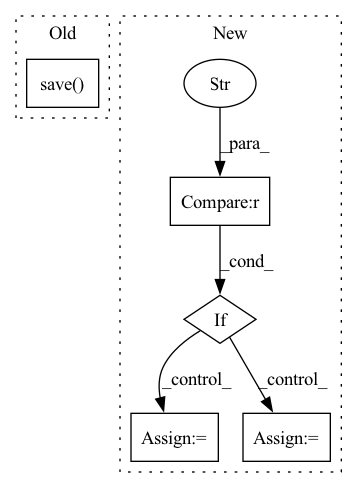

Pattern ID :5802
Before Change
if args.lora_rank > 0:
torch.save({"model_state_dict": lora.lora_state_dict(trainer.model)}, args.save_path)
else:
torch.save( trainer.model, args.save_path)
if __name__ == "__main__":
parser = argparse.ArgumentParser()After Change
raise ValueError(f"Unsupported model "{args.model}"")
// configure tokenizer
if args.model == "gpt2" :
tokenizer = GPT2Tokenizer.from_pretrained("gpt2")
tokenizer.pad_token = tokenizer.eos_token
elif args.model == "bloom":
tokenizer = BloomTokenizerFast.from_pretrained(args.pretrain)
tokenizer.pad_token = tokenizer.eos_token
elif args.model == "opt":
tokenizer = AutoTokenizer.from_pretrained("facebook/opt-350m")
else:
raise ValueError(f"Unsupported model "{args.model}"")
tokenizer.pad_token = tokenizer.eos_tokenIn pattern: SUPERPATTERN
Frequency: 4
Non-data size: 5
Instances Fragment ID: 20427255
Project Name: hpcaitech/colossalai
Commit Name: 2e16f842a9e5b1fb54e7e41070e9d2bb5cd64d7c
Time: 2023-02-22
Author: 70618399+ht-zhou@users.noreply.github.com
File Name: applications/ChatGPT/examples/train_reward_model.py
M Class Name: AnonimousClass
N Class Name: AnonimousClass
M Method Name: train(1)
N Method Name: train(1)
M Parent Class:
N Parent Class:
M File Name: applications/ChatGPT/examples/train_reward_model.py
N File Name: applications/ChatGPT/examples/train_reward_model.py
M Start Line: 30
M End Line: 66
N Start Line: 31
N End Line: 84
Before Change
document_store.update_embeddings(retriever)
// save index
document_store.save( args.index_name)
////// Ranker
ranker = ErnieRanker(
model_name_or_path="rocketqa-zh-dureader-cross-encoder",After Change
use_gpu = True if args.device == "gpu" else False
if (args.search_engine == "milvus") :
retriever = get_milvus_retriever(use_gpu)
else:
retriever = get_faiss_retriever(use_gpu)
////// Ranker
ranker = ErnieRanker( Fragment ID: 20427222
Project Name: paddlepaddle/paddlenlp
Commit Name: e893a6304e2564d57fb06d42ea7e6f76abfa9b01
Time: 2022-09-18
Author: w5688414@gmail.com
File Name: pipelines/examples/semantic-search/semantic_search_example.py
M Class Name: AnonimousClass
N Class Name: AnonimousClass
M Method Name: semantic_search_tutorial(0)
N Method Name: semantic_search_tutorial(0)
M Parent Class:
N Parent Class:
M File Name: pipelines/examples/semantic-search/semantic_search_example.py
N File Name: pipelines/examples/semantic-search/semantic_search_example.py
M Start Line: 55
M End Line: 131
N Start Line: 185
N End Line: 193
Before Change
pil_image = imagen(text, cond_scale = cond_scale, return_pil_images = True)
return pil_image.save( f"./{simple_slugify(text)}.png")
After Change
imagen_params = safeget(loaded, "imagen_params")
imagen_type = safeget(loaded, "imagen_type")
if imagen_type == "original" :
imagen_klass = ImagenConfig
elif imagen_type == "elucidated":
imagen_klass = ElucidatedImagenConfig
else:
raise ValueError(f"unknown imagen type {imagen_type}")
Fragment ID: 20427249
Project Name: lucidrains/imagen-pytorch
Commit Name: 4b098fba4c7f204149ea6e191249c9bf10622a5a
Time: 2022-07-16
Author: lucidrains@gmail.com
File Name: imagen_pytorch/cli.py
M Class Name: AnonimousClass
N Class Name: AnonimousClass
M Method Name: imagen(3)
N Method Name: imagen(3)
M Parent Class:
N Parent Class:
M File Name: imagen_pytorch/cli.py
N File Name: imagen_pytorch/cli.py
M Start Line: 36
M End Line: 43
N Start Line: 33
N End Line: 74
Before Change
// checkpoints require versioning -> use artifacts
if checkpoint:
artifact = wb.Artifact(self.checkpoint_artifactname(with_version=False), type="checkpoint")
torch.save( state, self.local_path() / self.checkpoint_filename())
artifact.add_file(str(self.local_path() / self.checkpoint_filename()))
wb.run.log_artifact(artifact)
// Not using artifacts for cases that do not require versioningAfter Change
if save_name == "checkpoint":
artifact = wb.Artifact(self.artifactname(self.checkpoint_filetag, with_version=False), type="checkpoint")
filename = self.checkpoint_filename()
elif save_name == "final" :
artifact = wb.Artifact(self.artifactname(self.final_filetag, with_version=False), type="result")
filename = self.final_filename()
else:
artifact = wb.Artifact(self.artifactname(save_name, with_version=False), type="other")
filename = save_name
torch.save(state, self.local_path() / filename) Fragment ID: 20427198
Project Name: maria-korosteleva/garment-pattern-estimation
Commit Name: 72d57db0446e351ea0b814a396fa40bffef14833
Time: 2020-07-14
Author: mariako@kaist.ac.kr
File Name: nn/experiment.py
M Class Name: WandbRunWrappper
N Class Name: WandbRunWrappper
M Method Name: save(3)
N Method Name: save(5)
M Parent Class: object
N Parent Class: object
M File Name: nn/experiment.py
N File Name: nn/experiment.py
M Start Line: 176
M End Line: 200
N Start Line: 180
N End Line: 192